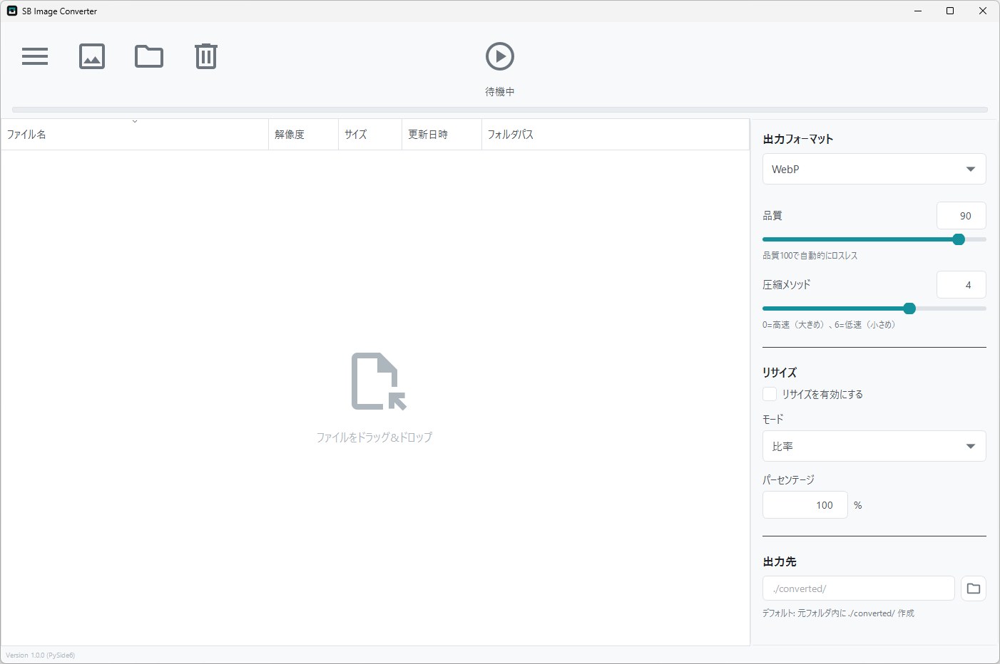

SB Image Converter
シンプルで高機能な
画像一括変換ツール
WebP, PNG, JPG, BMP形式の相互変換、柔軟なリサイズ、フォーマットごとの詳細な品質設定を備えた、Windows向けの無料オープンソースソフトウェアです。
| OS | Windows 10 以降 (64-bit) |
| メモリ (RAM) | 4GB 以上推奨 |
| ディスク容量 | 約 150MB |
インストール不要・解凍してすぐに使えます

WebP, PNG, JPG, BMP形式の相互変換、柔軟なリサイズ、フォーマットごとの詳細な品質設定を備えた、Windows向けの無料オープンソースソフトウェアです。
| OS | Windows 10 以降 (64-bit) |
| メモリ (RAM) | 4GB 以上推奨 |
| ディスク容量 | 約 150MB |
インストール不要・解凍してすぐに使えます

WebP, PNG, JPG/JPEG, BMP形式に対応。最新のWebPへの変換でファイルサイズを大幅に削減できます。
ドラッグ＆ドロップで数百枚の画像を一度に追加。高速に一括変換を行い、作業時間を短縮します。
比率(%)、ピクセル指定、長辺基準、短辺基準の4つのモードから、用途に合わせて柔軟にリサイズ可能です。
WebPの圧縮メソッドや、PNGの圧縮レベル、JPGのサブサンプリングなど、フォーマット毎に最適な設定が可能です。
カメラのExif情報やGPSデータなどのメタデータを保持するか、削除してプライバシーを保護するかを選択できます。
目に優しいダークモードを搭載。また、UIは完全日本語化されており、直感的に操作できます。

シンプルで直感的なインターフェース

目に優しいダークモード

リアルタイムの変換進捗表示
ドラッグ＆ドロップで変換したい画像を追加
WebP、PNG、JPG、BMPから出力形式を選択
 ボタンで一括変換
ボタンで一括変換
最新バージョン: 1.0.2 (2026-04-30 リリース)
ライセンス: GNU General Public License v3.0
使い方
※インストール不要。解凍したフォルダはどこに置いても動作します。
※初回起動時に「WindowsによってPCが保護されました」と表示される場合は、
「詳細情報」→「実行」をクリックしてください。